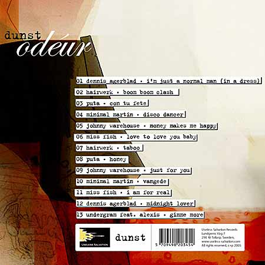

|
|
| Front cover of dunst - odéur |
 |
| dunst • odéur SALVATIONCD002 |
| Click on track to listen |
 |
| Release Party | 17. Marts -2005 |
20:00 - 23:00 Reception |
|
23:00 - 05:00 Release Party |
|
| www.culture-box.dk | |
| Press Photos | ||||||

|
||||||
| Johnny Warehouse | Puta | Undergram feat. AleX.T.C. | Hairwerk | Minimal Martin | Dennis Agerblad | Miss Fish |
| Photos by: Nikolaj Holm Møller. - Click on persons to load individual press photo. | ||||||
| Press Text |
| dunst "odéur" Sounds from the queer underground Compilation CD on Useless Salvation Useless salvation, the Danish cutting edge label that brought you Geeza, releases first compilation album from Danish queer underground movement Dunst. Dunst is, to say the least, notorious for their outrageous all night-dancefloor trash-drag performances. Since the beginning in 2001, their highly visual , provocative and entertaining shows have blown the tops of ecstatic crowds all over Europe. The past four years Dunst has made numeouros parties and events. E.g. poppers and darkroom party in a sightseeing bus with DJ. Bondage party at the HQ of danish boy scouts, co-arranged COMA party feat. KLF and the ultimate queer contest Mr & Mrs Dunst. Abroad Dunst has thrown a number of parties in Stockholm, Barcelona, Amsterdam and Berlin, latest at the new year homophobia event with Snax of Captain Comatose. This compilation gathers the best tracks produced for these events. The sounds are a vivid and innovative cocktail of contemporary underground and popular styles ranging from indie, electronica, electro, punk to disco…. Even though every artist has an individual style, the music is connected by the same nerve. It comes from an innermost wish to express a personal approach to queer lifestyle, identity, sex madness and the right to exist. These performances smell of what they are, hence the title odeur. The looks and trash drag performances by Dunst are highly unique, and have been compared to legends like leigh Bowery, Divine, Boy George, Dead Or Alive, Minty and Sylvester. Download: dunst_odeur_press.doc |
| Selected Press |
 Jeppesen
September 27'th 2004
Jeppesen
September 27'th 2004 |
| dunst History |
| What is dunst? Since 2001, Dunst has assembled designers, painters, musicians, dancers and filmmakers in a professed sexual-political organisation, where flamboyant personalities parade their marginalized sexuality. All forces are joined in Dunst’s performance group - (where sexuality is used to create gay-electro-punk shows) which has the principal job of eradicating the framework of the normalcy dictatorship that according to dunst characterizes modern society. With a challenging, in-your-face attitude dunst will turn scepticism to curiosity, and invite dialogue and veracity. dunst Website: www.dunst.dk Individual websites: Dennis Agerblad www.dennisagerblad.dk Miss Fish www.missfish.net Johnny Warehouse www.johnnywarehouse.com |
| Credit list |
| 01 Dennis Agerblad • I'm Just A Normal Man (in a dress) written, performed & produced by dennis agerblad 02 Hairwerk • Boom Boom Clash lyrics & vocals by hairwerk composed & produced by svendsen & hairwerk guitars by peter peter 03 Puta • Con Tu Fete lyrics & vocals by puta composed & produced by pelle skovmand & puta 04 Minimal Martin • Disco Dancer vocals by hairwerk composed & produced by minimal martin 05 Johnny Warehouse • Money Makes Me Happy written, performed & produced by johnny warehouse 06 Miss Fish • Love To Love You Baby vocals & rap by miss fish backing vocals by hairwerk written by P. Bellotte/G. Moroder/D. Summer courtesy of Crysalis/Warner Chappel programmed & rearranged by minimal martin produced by minimal martin & miss fish 07 Hairwerk • Taboo lyrics & vocals by hairwerk composed & produced by svendsen & hairwerk 08 Puta • Honey lyrics & vocals by puta composed & produced by pelle skovmand & puta 09 Johnny Warehouse • Just For You written, performed & produced by johnny warehouse 10 Minimal Martin • Vangede composed & produced by minimal martin 11 Miss Fish • I Am For Real lyrics & vocals by miss fish backing vocals by hairwerk sampled and rearranged from the song "Ten places to die" by SIX BY SEVEN written by Davis/Douglas/Hempton/Flower/Olley with kind permission from Mantra Records rearranged & produced by roger B 12 Dennis Agerblad • Midnight Lover written, performed & produced by dennis agerblad 13 Undergram feat. AleX.T.C.• Gimme More vocals by AleX.T.C. written by Rolf Soja/Peter Zentner, Magazine Music additional lyrics from romanthonys nightvision (never fuck), You Records arranged, programmed & produced by Undergram & Maturesh jacob tekiela: layout nikolaj holm møller: photos special thanks to everyone who contributed to the odéur of the queer underground. you know who you are ! |
| A brief presentation of the artists: |
| Dennis Agerblad |
| For further information, interviews and promotion material please contact: |
| Useless Salvation, Sweden Ph.+46 44 31 09 80 |
| 2009 |
Re-released by www.tungamusik.dk |
| Print this page |